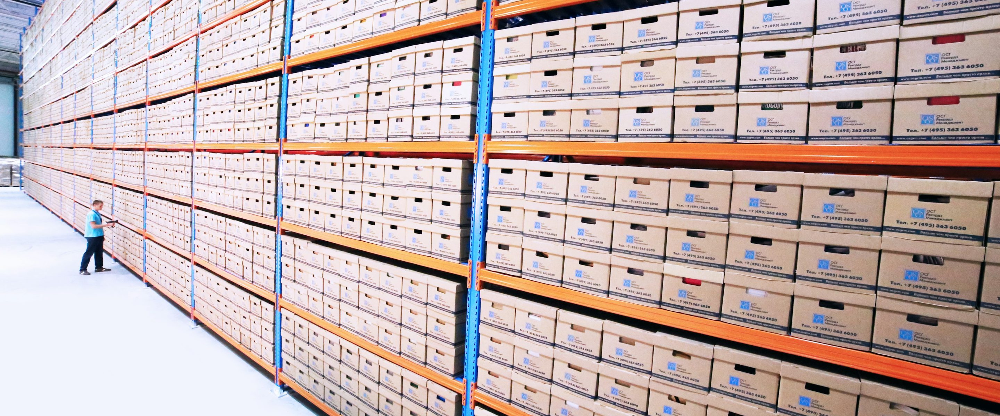

IN PLAIN ENGLISH
Compliance & Audit Owners
Audit questions often arrive after infrastructure has already changed. RackTrack makes evidence easier to defend because each record can point back to a physical source, a location, and a verification time.
Evidence is usually assembled too late.
The audit asks for proof, and the team has to collect photos, screenshots, tickets, and spreadsheet exports after the fact.
RackTrack captures the real cabinet.
RackTrack captures the physical rack state and keeps the source context attached to the asset record.
The team gets a record it can use.
Audit owners can answer control questions with a cleaner trail instead of asking engineers to reconstruct the past.

WHAT THE TEAM SEES
Clear rack evidence, not another mystery report.
- Timestamped physical evidence.
- Asset claims tied to a source image or observation.
- A repeatable way to prepare for reviews before the deadline.
DECISIONS MADE EASIER
SOC 2 evidence without the scramble.
Use one verified sweep to show how audit evidence can stay ready instead of being rebuilt later.
Which evidence is defensibleANSWERED
Which control has source proofANSWERED
Which record needs reviewANSWERED
START SMALL